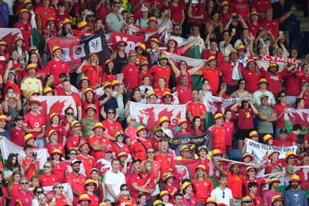

Sometimes it really is better to travel than to arrive. After a thoroughly enjoyable journey to their first major tournament Wales collided with the 2017 European champions and were left bruised, battered and bewildered.
During an instructive encounter in the shadow of Lucerne’s Mount Pilatus, Vivianne Miedema scored her 100th international goal. Perhaps even more significantly Andries Jonker’s side did enough to suggest it would be unwise to assume that England and France are destined to fill Group D’s top two places.
After conceding three soft goals and regularly being saved by the woodwork, Wales will almost certainly be watching the knockout phase on television. However, Rhian Wilkinson’s players should eventually come to look back on this chastening evening with real pride at their part in a landmark piece of national football history. Wilkinson had asked her players to turn into latter day Princess Gwenllians and, on that level at least, they did not disappoint. As a 12th century Welsh warrior princess, Gwenllian led an army into battle against the mighty Normans and the Wales head coach spied parallels in the challenge her team faced against the Netherlands. Much like Gwenllian they ultimately met a sticky end but for 45 minutes Angharad James and company put up a wonderfully defiant fight in front of the loudest of travelling “Red Walls” massed at Allmend Stadion. Wales supporters have registered the second highest ticket sales of any country involved in Euro 2025’s group stage and almost 4,000 were here. Many had overcome delays and flight diversions prompted by a French air traffic controllers’ strike action but, by Saturday lunchtime, downtown Lucerne was a sea of Welsh red and Dutch orange. Around 3,000 fans had made the journey from the Netherlands and they saw their side dominate first-half possession. With Barcelona’s excellent Esmee Brugts worrying Josie Green down the Dutch left, Wilkinson was soon on her feet, urging her players to make the game more compact. Yet as much as the Welsh back five spent protracted periods resisting hostile fire, Jess Fishlock’s deployment as a false nine periodically ruffled the Netherlands. Not for the first time most of Wilkinson’s team’s best moves began with the indomitably industrious 38-year-old’s superior touch and vision. Wilkinson, though, was content to see her team deliberately slow things down, with Lily Woodham’s booking for time wasting at a throw-in a price probably worth paying for disrupting Dutch momentum to the point where Jonker began to look more than a little irritated.
Wales fans turned out in their thousands to support the team against the Netherlands.Photograph: Alessandra Tarantino/AP
Although Hayley Ladd did well to head a dangerous Jill Roord cross clear, Miedema was initially well second guessed by Sunderland’s new central defensive signing from Real Betis, Rhiannon Roberts. Roord proved rather harder to pin down and, when she ghosted in behind Ladd, the FC Twente attacking midfielder unleashed the most vicious of half volleys which, having beaten Olivia Clark, ricocheted off the inside of a post.
It represented an extremely fortunate reprieve for Wales but their luck could not last and it finally ran out in the psychologically debilitating dying moments of first-half stoppage time. Just as Wilkinson’s containment plan seemed to have held firm, the Manchester City striker received the ball from Daniëlle van de Donk and proceeded to put Roberts firmly in her place.
Alarm spread across Wilkinson’s face as the much decorated former Canada defender watched Miedema tease Roberts by twice dropping a shoulder and feinting to shoot before finally swivelling imperiously beyond her bewildered marker. As Miedema’s perfectly calibrated 20-yard shot curved into the top corner Welsh hopes dipped even lower than the early evening Swiss sun.
Jonker, who had taken the precaution of ordering every outfield player back when Wales earlier won a couple of corners, simply looked relieved. On the eve of the tournament the outgoing Netherlands coach had raised eyebrows by taking to the airwaves and discussing his surprise and disappointment at learning he will be replaced by the England coach, Sarina Wiegman’s assistant, Arian Veurink next month.
This has been interpreted as selfish in some quarters and a heated pre-match press conference involved a journalist telling Jonker he was treating his apparently unimpressed players like “puppets in a puppet show”.
Not that creative tensions in Dutch dressing rooms are anything really new. As if to emphasise that her team are well capable of rising above them, Arsenal’s Victoria Pelova opened the second half by meeting Van de Donk’s lay off, taking a steadying touch and shooting unerringly beyond Clark. Wales had paid the price for being caught cold by a long ball over the top towards the advancing Van de Donk.
After Miedema had, once again, turned Roberts inside and picked out Roord with the outside of a boot, the latter hit the woodwork again.
It was purely a temporary stay of execution as Brugts soon made it three. When Jackie Groenen’s shot rebounded off the bar, Wales failed to clear properly, permitting the Barcelona winger back to connect with a cross and volley beyond poor Clark.
It could have been worse but Lineth Beerensteyn had what she thought was her country’s fourth goal subsequently disallowed for a tight offside.